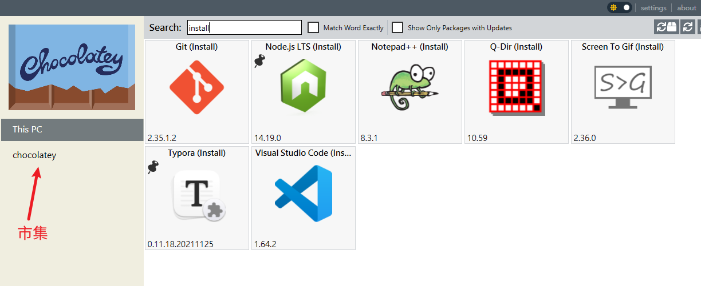
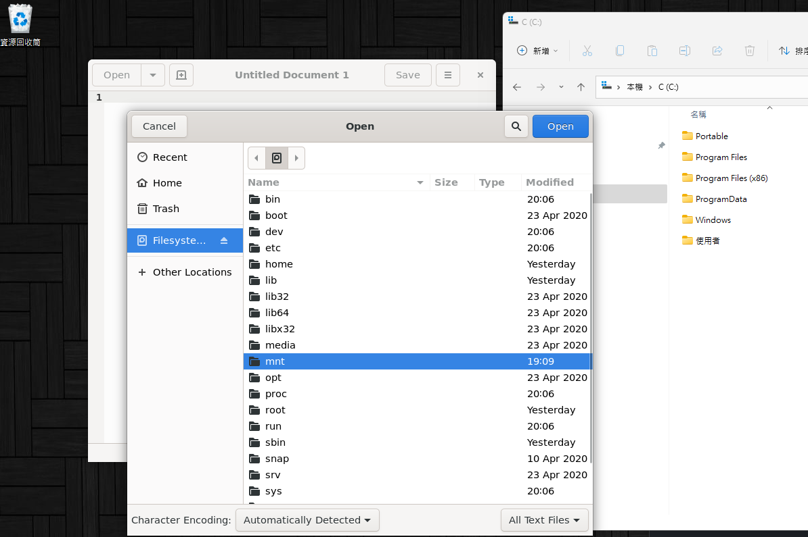
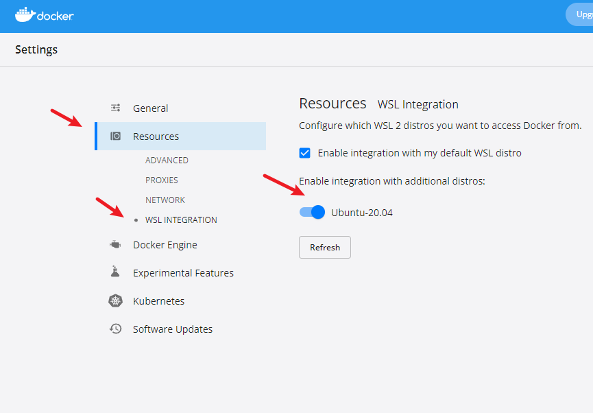

Windows 11與WSL
順便整理Windows重灌後的事項
Win 11
- 其實單純就是手癢，順便記錄一下重灌後的事項
chocolatey
- Windows 上的套件管理工具，類似
apt跟brew - 安裝使用powershell執行:
Set-ExecutionPolicy Bypass -Scope Process -Force; [System.Net.ServicePointManager]::SecurityProtocol = [System.Net.ServicePointManager]::SecurityProtocol -bor 3072; iex ((New-Object System.Net.WebClient).DownloadString('https://community.chocolatey.org/install.ps1'))
- (非必要) 修改安裝路徑，預設是在
C:\ProgramData\chocolatey
- 他其實是一個系統環境變數，所以也可以手動修改，例如
setx.exe ChocolateyInstall D:\Chocolatey /M
- 安裝常用的工具，可以自己做批次腳本執行
-y的意思是自動確認，可以全自動安裝
choco install chocolateygui -y
choco install -y notepadplusplus
choco install qdir -y
choco install -y git
choco install -y hugo
choco install typora --version=0.11.18.20211125 -y
choco pin add --name="'typora'" --version="'0.11.18.20211125'"
choco install brave -y
choco install paint.net -y
choco install locale-emulator -y
choco install screentogif.install -y
choco install foobar2000 -y
choco install vscode -y
choco install nodejs-lts --version=14.19.0 -y
choco pin add --name="'nodejs-lts'" --version="'14.19.0'"
- 也有GUI可以使用，能夠快速查看本地安裝的跟瀏覽市集

WSL
Windows Subsystem for Linux
- 微軟官方的虛擬機，到win11變很好用了(win11的兩個重點其實就是WSL跟WSA)
- 開啟一個終端，用
wsl --list --online查看有哪些版本可以裝 - 比如我選擇安裝Ubuntu 20.04 LTS
wsl --install -d Ubuntu-20.04
- 安裝成功它會需要設定帳戶名稱跟密碼，然後就可以進入linux了
- 接著安裝gedit，它會一併把WSL GUI要用到的東西都裝了，所以會比較久
sudo apt install gedit -y
- 安裝完後能直接在windows的開始選單內找到，可以像windows的程式一樣直接開啟linux的程式，非常快速、順滑
- 用來調測、修改文件整個超方便，媽媽再也不擔心我被vi困住出不來了

- 題外話，裝完WSL記得去把docker desktop的橋接打開

其他Windows工具
-
WPD，禁止微軟的各種隱私追蹤、低能的自動更新…等等
-
Dism++，不用多說，也是專治微軟的各種低能設定，用來重灌、備份也很方便
-
Potplayer，用俄國geek封裝好的版本，去掉很多不必要的麻煩
-
還原舊版工具列、開始、右鍵選單請用StartAllBack(收費軟體)
-
經典音量混音程式，由於win11把右下的音量改的很低能，而且dism++的修正失效，只好用此替代方案，簡單說就是把系統預設的隱藏掉，然後把這個放到啟動
-
jpegview，最快最小最好用的看圖程式，原作者棄坑，最近才得知有人接手
-
snipaste，最好用的截圖軟體，也可以安裝微軟商店版
-
字體必用更紗黑體
- https://github.com/be5invis/Sarasa-Gothic
- 抓sarasa-gothic-ttf，不用全部解壓縮，可以挑TC(台灣繁體)的兩個即可，例如:
- sarasa-fixed-tc-regular 常規
- sarasa-mono-tc-regular 等距
-
Brave瀏覽器個人常用的一些插件

- 油猴腳本主要是瀏覽大陸的網站時好用，可以避免強迫登入或是逼你開APP、各種廣告堵臉的情況，例如:
- CSDN广告完全过滤
- 知乎增强
- 贴吧全能助手
- Login reminder popup remover
- 反正只要不是特別小的站，遇到各種噁心人的關卡的，很多時候都有油猴腳本可以解決問題
上次修改於 2022-02-26